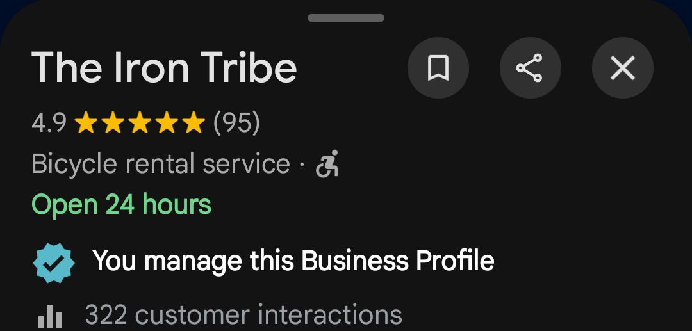

Profile Optimization
Improved the overall structure and information presented through the business profile.
A focused Google Business Profile optimization project designed to strengthen local search visibility, improve customer discovery and generate more meaningful actions from Google Maps.
The objective was not simply to create or update a Google Business Profile. The focus was to build a stronger local presence that could help potential customers discover The Iron Tribe when searching for relevant cycling experiences in Mumbai.
Improve the business's presence for relevant local Google searches and Maps discovery.
Make it easier for potential customers to contact the business directly from Google.
Strengthen credibility through reviews, photos and a more complete business profile.
We focused on the profile elements that influence relevance, trust, engagement and local discovery.
Profile information was reviewed and structured to present the business clearly to potential customers.
Relevant primary and secondary categories were considered to strengthen business relevance.
Business information was optimized around the services and search intent of potential customers.
Relevant services were organized to give customers clearer information about the business.
Business photos were used strategically to improve profile presentation and customer trust.
Regular content was planned to keep the profile active and communicate relevant business updates.
A structured approach was used to encourage genuine customer reviews and engagement.
Local search relevance was considered across the profile's content and business information.
The strategy was built around improving the profile's relevance, completeness, activity and customer trust rather than relying on a single optimization.
Profile audit and opportunity identification
Business information and category optimization
Content, photos and GBP activity
Review and customer engagement strategy
Ongoing performance monitoring and improvement
Improved the overall structure and information presented through the business profile.
Added relevant visual content and posts to strengthen profile activity and presentation.
Developed a review approach designed to strengthen social proof and customer trust.
Monitored important profile interactions and identified opportunities for continued improvement.
These results were recorded during the first 7 days of GBP optimization. The early movement indicates strong potential for continued growth over a longer optimization period.
Based on the initial 7-day performance, continued GBP optimization could create substantially stronger visibility and customer actions over a 30-day period. Actual results will vary based on search demand, competition, reviews and business activity.
Showcase screenshots and visuals from the actual Google Business Profile work completed for the client.



A Google Business Profile should not be treated as a one-time setup. Strong local presence comes from maintaining accurate information, publishing useful content, collecting genuine reviews and continuously improving the profile based on performance.
For The Iron Tribe, the focus was to create a stronger and more complete Google presence that supports discovery and customer actions.
Get a free GBP audit from The Media Grid and discover the biggest opportunities in your current Google presence.
Get My Free GBP Audit